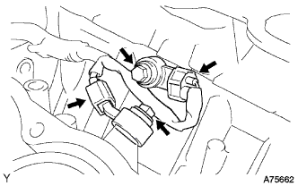

ДАТЧИК ДЕТОНАЦИИ > СНЯТИЕ |
| 1. СНИМИТЕ ГОЛОВКУ БЛОКА ЦИЛИНДРОВ В СБОРЕ (для ряда 1) |
Снимите головку блока цилиндров (Нажмите здесь).
| 2. СНИМИТЕ ОТВОДЯЩУЮ ТРУБКУ СИСТЕМЫ ОХЛАЖДЕНИЯ № 1 |
 |
Отсоедините 3 зажима жгута проводов.
Отверните 2 гайки, выверните болт и снимите отводящую трубку системы охлаждения.
| 3. СНИМИТЕ ДАТЧИК ДЕТОНАЦИИ |
|  |
Отсоедините 2 разъема датчиков.
Выверните 2 болта и снимите 2 датчика.